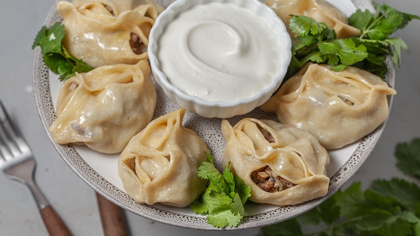

Manty (Russian dumplings)

Description
Manty are traditional russian dumplings. They are very simple in terms of the ingredients but that is what makes them so good!
Ingredients:
For the dough:
For the filling:
- 500g Mincedmeat
- 2 Onions
- Salt, Pepper, Garlicpowder
- Some Cooking Cream
Steps:
- First you prepare the dough. You add as much flour needed to the milk so that it makes a soft dough but not sticky.
- Cut the onions in very small pieces.
- Mix all the ingredients for the filling and add the spices to taste.
- Spread the dough evenly on a surface and cut squares. They shouldn't be too small. Manty are usually a bit bigger.
- Put the filling onto all the squares to equal parts and then close the Manty-dumplings.
- When you prepared all your dumplings put them in a steamer and cook for 45m minutes.
They are best served with sour cream. Enjoy your meal!
Return to main page